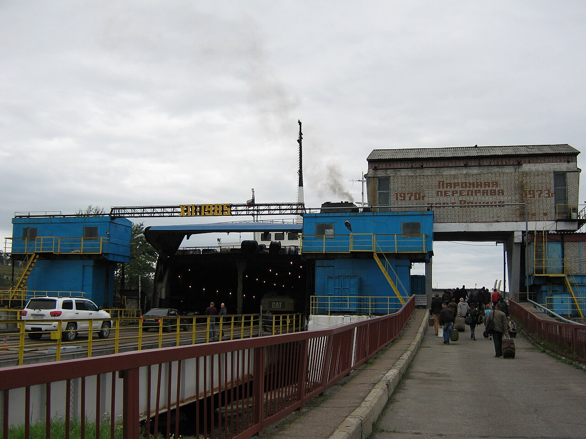

写真は神田古本まつり（2019年）、パリのセーヌ河岸、神保町の古本屋。古本市の人の流れはこんな感じです。
24の古本屋が
乗ります
売り場は3つの階。甲板は外の風の中、客室はじゅうたんの和室と椅子席、車両甲板には移動書店のトラックが入ります。乗り口は船尾の車両甲板です。
24店
- D-1汐見書房船と海の本・海図（鴨谷）
- D-2古書いかり山と旅の本（汐留町）
- D-3ほんの港絵本・児童書（鴨谷）
- D-4ひなた文庫文庫・新書 3冊500円（東浜）
- D-5凪書店詩集・句集（島崎）
- D-6とんぼ堂昆虫と植物の図鑑（古町）
- D-7紙ひこうき古い雑誌・付録（鴨谷）
- D-8浜の本棚料理と暮らしの本（西浜）
- C-1二階堂古書店郷土史・古地図（古町）
- C-2青灯社美術書・図録（鴨谷）
- C-3くじら書房漫画（昭和〜平成）（島崎）
- C-4ふるほん波止場ミステリーと推理小説（東浜）
- C-5文月堂和本・古い教科書（汐留町）
- C-6みちくさ文庫エッセイ・随筆（鴨谷）
- C-7Book & Tide洋書・ペーパーバック（港通り）
- C-8灯台書林写真集（島崎）
- C-9こぐま書店絵本の原書（西浜）
- C-10古本 帆建築とデザインの本（古町）
- V-1トラック書店 ろ号100円均一の棚（移動書店）
- V-2しまめぐり号旅と鉄道の本（移動書店）
- V-3古書 錨屋全集・箱入りの本（鴨谷）
- V-4レコードと本 ソナー音楽の本とレコード（港通り）
- V-5ぶっくまる学習参考書・辞書（東浜）
- V-6港の古道具 ふなだんす古本と古道具（古町）

セーヌ河岸の古本屋。箱の前で、手に取って選びます。
来る前に
雨の日
雨でも開きます。甲板の8店は客室の後ろの広間に移ります。風が強く船の出入りに差し支える日は、前の日の18時までにこのページでお知らせします。
お金と袋
支払いは店ごとに違います。現金だけの店が半分ほどあるので、小銭を持ってきてください。袋は出ないことが多いので、大きめの袋があると便利です。
船の中で
乗船券も乗船名簿もいりません。靴のまま入れます。船は岸壁に泊まったままで、出航はしません。車両甲板は床に段差があるので、足もとに気をつけてください。

岸壁を歩いて船へ（ワニノ港）。かもや丸も、船尾の車両甲板から歩いて乗ります。
行き方
11.22土曜
10:00–16:00
10:00–16:00
11.23日曜・祝日
10:00–16:00
10:00–16:00
- 場所
- 鴨谷港 第2岸壁（フェリーターミナルの南）
- 電車
- 鴨谷駅 南口から港通りを南へ、徒歩12分
- バス
- 鴨谷駅前 3番乗り場から「フェリーターミナル」行き、終点すぐ（約6分）
- 車
- ターミナルの駐車場 120台（2日とも無料）。満車のときは港通りの市営駐車場へ
- 入場
- 無料